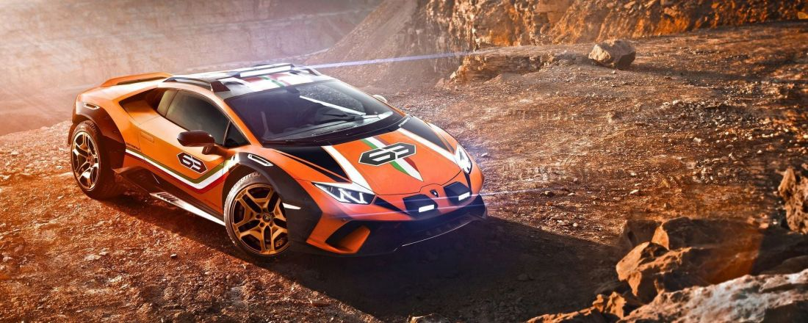
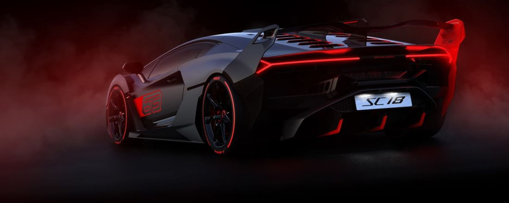
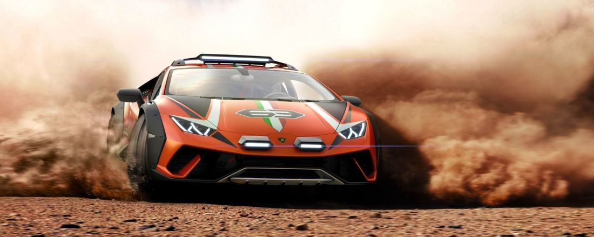
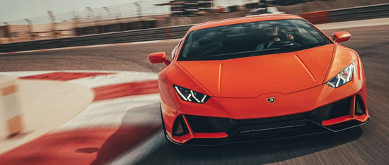

Unete a Nuestra familia

Lamborghini

Explora
Lamborghini

Vive la adrenalina
Lamborghini

Disfruta
Lamborghini

Elegancia
Lamborghini
Bienvenidos a nuestra pagina lamborghini.
La historia de «Lamborghini Automobili» comienza en 1963 gracias a Ferruccio Lamborghini, nacido
en 1916 bajo el signo de Tauro, un hombre hábil, impetuoso, de fuerte carácter y, sobre todo, el
verdadero protagonista del nacimiento de la empresa y de las fases iniciales de su
extraordinaria historia. A principios de la posguerra de la Segunda Guerra Mundial, Ferruccio ya
había fundado una fábrica de tractores, la cual puso en marcha con energía y determinación,
creando un verdadero punto de referencia en el sector.
A principios de los años sesenta, Lamborghini era un hombre de éxito, fuerte y con las ideas
claras, pero cuando dijo que fabricaría un superdeportivo con el que hacer la competencia a
Ferrari, muchos pensaron que estaba loco.
Comenzó a trabajar en el proyecto a finales de 1962 y ya en mayo de 1963 fundó la sociedad
«Automobili Ferruccio Lamborghini», adquiriendo un terreno de grandes dimensiones en Sant'Agata
Bolognese, a unos 25 kilómetros de Bolonia, para construir una fábrica grande y ultramoderna.
La experiencia que había adquirido con sus otras empresas le permitió encontrarse en condiciones
de montar las mejores instalaciones para su objetivo: una estructura muy funcional que, en aquel
momento, no tenía rivales en este sector.
El primer modelo vio la luz con mucha prisa: había pocos meses de margen entre la construcción
de la fábrica y la fecha de la inauguración oficial, fijada para la cita más importante de la
época: el Salón del Automóvil de Turín a principios de noviembre de 1963.
Para el estreno, Lamborghini tenía las ideas muy claras: el motor, que tenía que ser el mejor 12
cilindros en V fabricado en la zona y, por lo tanto, en el mundo, fue confiado a Giotto
Bizzarrini, que había diseñado algunos de los últimos motores de Ferrari. Para la fabricación
del coche contrató a dos jóvenes ingenieros muy prometedores: Gian Paolo Dallara y Paolo
Stanzani.
Un gran esfuerzo con poco margen de tiempo, pero aún así, cuando se presentó el 350 GTV, ya era
una obra maestra.
El año siguiente, el 1964 fue un año igualmente extraordinario. Nació el 350 GT. La evolución
inmediata y casi inevitable del 350 GT, del cual se fabricaron 120 ejemplares, fue el 400 GT,
con motor de cuatro litros y el primer cambio diseñado y fabricado en la casa Lamborghini. El
400 GT, que estaba basado inicialmente en una carrocería de dos asientos y posteriormente
evolucionó en el 400 GT 2+2, de cuatro asientos, alcanzó la respetable cifra total de producción
de 273 ejemplares.
Video Documental
Lugar de fabricacion
Listas de html desordenadas
- Autos deportivos
- Tractores
- Camionetas
- Autos comunes
Listas de html ordenadas
- Autos deportivos
- Tractores
- Camionetas
- Autos comunes
Transmisiones
- Modelo
- -Murciélago
- Estandar
- -6 marchas manual
- Opcional
- -6 marchas e-Gear
Lamborghini murciélago:
El Lamborghini Murciélago es un automóvil superdeportivo diseñado y producido por el fabricante italiano Lamborghini en su fábrica de Sant’Agata Bolognese.
El Murciélagoes un dos plazas disponible con carrocerías cupé y descapotable de dos puertas; las puertas de este deportivo son del tipo de tijera (también conocidas como Lamborghini Style Doors o Puertas Estilo Lamborghini).
En 2011, el coche fue reemplazado por el Lamborghini Aventador.
El nombre "Murciélago"procede del nombre de un toro de la ganadería Pérez de Laborda Lamborghini ha usado en otros de sus modelos nombres de toros míticos como Aventador, Diablo o Islero, o relacionados con la actividad de la tauromaquia: Miura, Urraco, Espada o Gallardo. que por su bravura y entrega ante el torero Rafael Molina "Lagartijo" fue indultado en 1879, y fue comprado por Antonio Miura para ser usado como semental.
Debido a su nombre, este modelo fue elegido como el automóvil de Bruce Wayne, interpretado por Christian Bale, en las películas de Batman, Batman Begins y The Dark Knight. Incluso antes del estreno de esta última, el 18 de julio de 2008, se pudo ver este modelo en el tercer tráiler oficial de la película.
Descripcion:
El motor del Murciélago es un 12 cilindros de 6192 cc dispuesto en V a 60º, que alcanza los 580 CV a 7500 rpm, con un par de 66,3 kgm a 5400 rpm. Gracias a esto, este deportivo es capaz de llegar a los 333 km/h de velocidad máxima y acelerar de 0 a 100 km/h en 3,8 s. Como lo viene haciendo la marca desde hace 30 años, el motor está situado en posición central longitudinal con la transmisión ubicada al frente.Esta disposición le otorga al vehículo una buena distribución de pesos, 58 % atrás y 42 % delante, confiriéndole mejor tracción, agarre y frenada.
La caja de cambios es automática de seis marchas (por primera vez en un modelo de
Lamborghini) y tracción total con un acoplador central viscoso. Cuenta también
con un sistema de control de tracción (TCS) que reduce la potencia del motor en
situaciones extremas de conducción o de límite de adherencia, pudiendo llegar a cortar la
inyección.
La estructura de este automóvil consiste en un armazón de tubos de acero de alta resistencia, reforzados con planchas de acero y fibra de carbono, gracias a estos materiales el peso total es de 1.650 kg.
El sistema de suspensión es "independiente, de doble horquilla delante y detrás", con articulaciones de acero y amortiguadores hidráulicos (el eje posterior cuenta con dos muelles y dos amortiguadores por rueda), cuya dureza se ajusta de forma automática (ya sea manualmente o por medio de la electrónica).
El Murciélago tiene un sistema de refrigeración del motor denominado VACS (Variable Air-flow
Cooling System), que consiste en dos tomas de aire laterales con forma de aletas, situadas
en la parte posterior de las ventanas.
Estas son regulables manual o automáticamente,
controladas por una unidad electrónica PMC (que controla además otras funciones del vehículo).
Las aletas pasan desapercibidas si no están desplegadas.
El alerón del Murciélago es variable, y puede cambiar de forma automática en tres diferentes posiciones:
- Cerrado: cuando el vehículo circula a menos de 130 km/h
- A 50º: cuando circula entre 130 y 220 km/h
- A 70º: cuando circula a más de 220 km/h
En conjunto, el grado de apertura de las aletas laterales y el alerón trasero hacen que el
coeficiente de penetración aerodinámico oscile entre los 0,33 Cx y los 0,36 Cx.
En cuanto a los frenos, el Murciélago cuenta con cuatro discos perforados y dos circuitos
hidráulicos independientes, a los que se suman el sistema ABS con repartidor de frenada
electrónico DRP y un servofreno de emergencia.